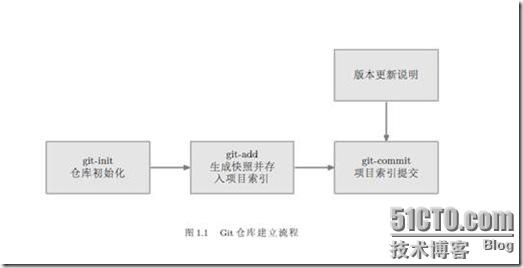
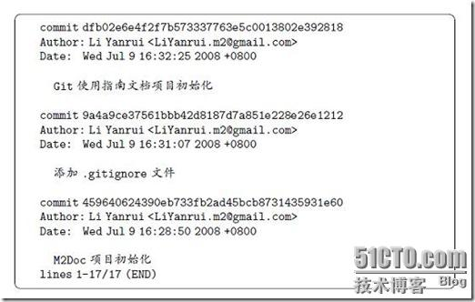
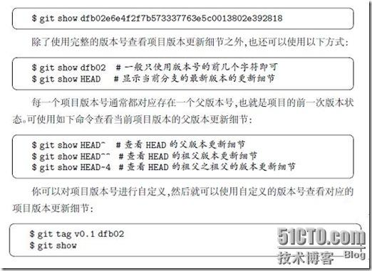
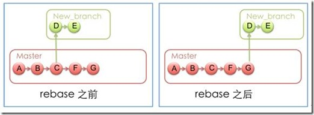
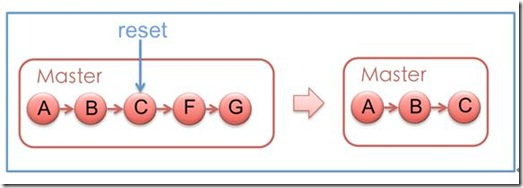
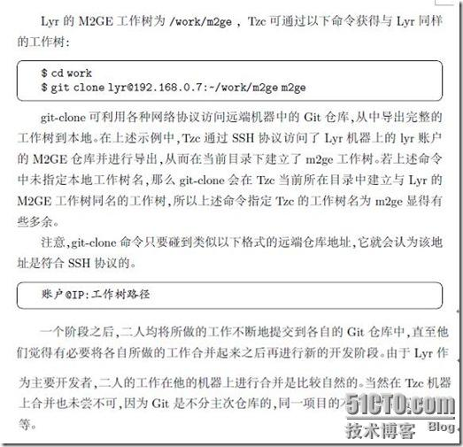
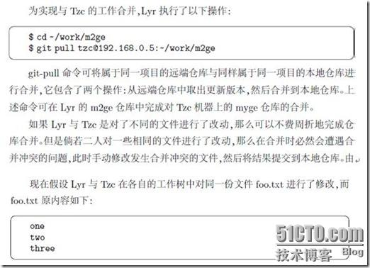
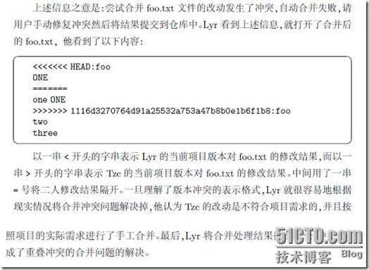
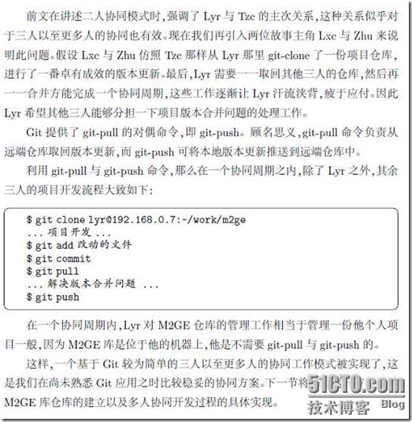

git使用详细介绍
1.1. Git库中由三部分组成
Git 仓库就是那个.git 目录，其中存放的是我们所提交的文档索引内容，Git 可基于文档索引内容对其所管理的文档进行内容追踪，从而实现文档的版本控制。.git目录位于工作目录内。
1） 工作目录：用户本地的目录；
2） Index（索引）：将工作目录下所有文件（包含子目录）生成快照，存放到一个临时的存储区域，Git 称该区域为索引。
3） 仓库：将索引通过commit命令提交至仓库中，每一次提交都意味着版本在进行一次更新。

1.2. 使用Git时的初始化事项
1.2.1. Git初始化配置
1） 配置使用git仓库的人员姓名
git config --global user.name "Your Name Comes Here"
2） 配置使用git仓库的人员email
git config --global user.email you@yourdomain.example.com
1.2.2. Git文档忽略机制
工作目录中有一些文件是不希望接受Git 管理的，譬如程序编译时生成的中间文件等等。Git 提供了文档忽略机制，可以将工作目录中不希望接受Git 管理的文档信息写到同一目录下的.gitignore 文件中。
例如：工作目录下有个zh目录，如果不想把它加入到Git管理中，则执行：
echo “zh” > .gitignore
git add .
有关gitignore 文件的诸多细节知识可阅读其使用手册：man gitignore
1.3. Git与Repo的比较
Git操作一般对应一个仓库，而Repo操作一般对应一个项目，即一个项目会由若干仓库组成。
例如，在操作整个Recket项目时使用Repo，而操作其中的某个仓库时使用Git。在包含隐藏目录.git的目录下执行git操作。
2. Git help
Git help 获取git基本命令
（如果要知道某个特定命令的使用方法，例如：使用Git help clone，来获取git clone的使用方法）
3. Git本地操作基本命令
3.1. Git init
或者使用git init-db。
创建一个空的Git库。在当前目录中产生一个.git 的子目录。以后，所有的文件变化信息都会保存到这个目录下，而不像CVS那样，会在每个目录和子目录下都创建一个CVS目录。
在.git目录下有一个config文件，可以修改其中的配置信息。
3.2. Git add
将当前工作目录中更改或者新增的文件加入到Git的索引中，加入到Git的索引中就表示记入了版本历史中，这也是提交之前所需要执行的一步。
可以递归添加，即如果后面跟的是一个目录作为参数，则会递归添加整个目录中的所有子目录和文件。例如：
git add dir1 （ 添加dir1这个目录，目录下的所有文件都被加入 ）
Git add f1 f2 （ 添加f1，f2文件）
git add . ( 添加当前目录下的所有文件和子目录 )
3.3. Git rm
从当前的工作目录中和索引中删除文件。
可以递归删除，即如果后面跟的是一个目录做为参数，则会递归删除整个目录中的所有子目录和文件。例如：
git rm –r * （进入某个目录中，执行此语句，会删除该目录下的所有文件和子目录）
git rm f1 (删除文件f1，包含本地目录和index中的此文件记录)
git rm --ached f1 (删除文件f1，不会删除本地目录文件，只删除index中的文件记录；将已经git add的文件remove到cache中,这样commit的时候不会提交这个文件, 适用于一下子添加了很多文件, 却又想排除其中个别几个文件的情况.)
3.4. Git commit
提交当前工作目录的修改内容。
直接调用git commit命令，会提示填写注释。通过如下方式在命令行就填写提交注释：git commit -m "Initial commit of gittutor reposistory"。 注意，和CVS不同，git的提交注释必须不能为空，否则就会提交失败。
git commit还有一个 -a的参数，可以将那些没有通过git add标识的变化一并强行提交，但是不建议使用这种方式。
每一次提交，git就会为全局代码建立一个唯一的commit标识代码，用户可以通过git reset命令恢复到任意一次提交时的代码。
git commit –-amend –m “message” （在一个commit id上不断修改提交的内容）
3.5. Git status
查看版本库的状态。可以得知哪些文件发生了变化，哪些文件还没有添加到git库中等等。 建议每次commit前都要通过该命令确认库状态。
最常见的误操作是， 修改了一个文件， 没有调用git add通知git库该文件已经发生了变化就直接调用commit操作， 从而导致该文件并没有真正的提交。这时如果开发者以为已经提交了该文件，就继续修改甚至删除这个文件，那么修改的内容就没有通过版本管理起来。如果每次在 提交前，使用git status查看一下，就可以发现这种错误。因此，如果调用了git status命令，一定要格外注意那些提示为 “Changed but not updated:”的文件。 这些文件都是与上次commit相比发生了变化，但是却没有通过git
add标识的文件。
3.6. Git log
查看历史日志，包含每次的版本变化。每次版本变化对应一个commit id。
Git log -1
-1的意思是只显示一个commit，如果想显示5个，就-5。不指定的话，git log会从该commit一直往后显示。
Git log --stat –summary （显示每次版本的详细变化）
在项目日志信息中，每条日志的首行（就是那一串字符）为版本更新提交所进行的命名，我们可以将该命名理解为项目版本号。项目版本号应该是唯一的，默认由 Git 自动生成，用以标示项目的某一次更新。如果我们将项目版本号用作git-show 命令的参数，即可查看该次项目版本的更新细节。例如：
1) Git log

2）Git show

实际上，上述命令并非是真正的进行版本号自定义，只是制造了一个tag对象而已，这在进行项目版本对外发布时比较有用。
3.7. Git merge
把服务器上下载下来的代码和本地代码合并。或者进行分支合并。
例如：当前在master分支上，若想将分支dev上的合并到master上，则git merge dev
注意：git merge nov/eclair_eocket （是将服务器git库的eclair_eocket分支合并到本地分支上）
git rebase nov/eclair_eocket （是将服务器git库的eclair_eocket分支映射到本地的一个临时分支上，然后将本地分支上的变化合并到这个临时分支，然后再用这个临时分支初始化本地分支）
3.8. Git diff
把本地的代码和index中的代码进行比较，或者是把index中的代码和本地仓库中的代码进行比较。
1） Git diff
比较工作目录和Index中的代码。
2） Git diff - - cached
比较index和本地仓库中的代码。
3.9. Git checkout
3.9.1. 切换到分支
1) 创建一个新分支，并切换到该分支上
Git checkout –b 新分支名
2）切换到某个已经建立的本地分支local_branch
Git checkout local_branch
（使用cat .git/HEAD后，显示refs:refs/heads/ local_branch）
3) 切换到服务器上的某个分支remote_branch
Git checkout remote_branch
（远程分支remote_branch可以通过 git branch –r 列出）
4) 切换到某个commit id
Git checkout commit_id
（使用cat .git/HEAD后，显示commit_id）
5) 切换到某个tag
Git checkout tag
（使用cat .git/HEAD后，显示tag）
注意： 除了1）和2）外，其余三种都只是切换到了一个临时的( no branch )状态 （this head is detached），这时用 git branch 可以看到处于（no branch）上， cat .git/HEAD 看到指向相应的commit id。 这个（no branch）只是临时存在的，并不是一个真正建立的branch。 如果此时执行2），则这个（no branch）就自动消失了；如果执行1）， 则创建新分支 new branch，并把这个(no branch)挂到这个新分支上，此时cat
.git/refs/heads/new_branch 可以看到已经指向了刚才那个commit id。
3.9.2. 用已有分支初始化新分支
执行下面的命令，在切换到某个已经建立的local branch或者某个remote branch或者某个commit id 或者某个tag的同时，创建新分支new_branch，并且挂到这个新分支上。
1） 切换到某个已经建立的本地分支local_branch，并且使用此分支初始化一个新分支new_branch。
git checkout –b new_branch local_branch
2) 切换到某个远程分支remote_branch，并且用此分支初始化一个新分支new_branch。
Git checkout –b new_branch remote_branch
3) 切换到某个commit id，并建立新分支new_branch
Git checkout –b new_branch commit_id
4) 切换到某个tag，并建立新分支new_branch
Git checkout –b new_branch tag
3.9.3. 还原代码
例如 “git checkout app/model/user.rb” 就会将user.rb文件从上一个已提交的版本中更新回来，未提交的工作目录中的内容全部会被覆盖。
3.10. Git-ls-files
查看当前的git库中有那些文件。
3.11. Git mv
重命名一个文件、目录或者链接。
例如：Git mv helloworld.c helloworld1.c （把文件helloworld.c 重命名为 helloworld1.c）
3.12. Git branch
3.12.1. 总述
在 git 版本库中创建分支的成本几乎为零，所以，不必吝啬多创建几个分支。当第一次执行git init时，系统就会创建一个名为“master”的分支。 而其它分支则通过手工创建。
下面列举一些常见的分支策略：
创建一个属于自己的个人工作分支，以避免对主分支 master 造成太多的干扰，也方便与他人交流协作；
当进行高风险的工作时，创建一个试验性的分支；
合并别人的工作的时候，最好是创建一个临时的分支用来合并，合并完成后再“fetch”到自己的分支。
对分支进行增、删、查等操作。
注意：分支信息一般在.git/refs/目录下，其中heads目录下为本地分支，remotes为对应服务器上的分支，tags为标签。
3.12.2. 查看分支
git branch 列出本地git库中的所有分支。在列出的分支中，若分支名前有*，则表示此分支为当前分支。
git branch –r 列出服务器git库的所有分支。
（可以继续使用命令 “ git checkout -b 本地分支名 服务器分支名”来获取服务器上某个分支的代码文件）。
3.12.3. 查看当前在哪个分支上
cat .git/HEAD
3.12.4. 创建一个分支
1） git branch 分支名
虽然创建了分支，但是不会将当前工作分支切换到新创建的分支上，因此，还需要命令“git checkout 分支名” 来切换，
2） git checout –b 分支名
不但创建了分支，还将当前工作分支切换到了该分支上。
3.12.5. 切换到某个分支：git checkout 分支名
切换到主分支：git checkout master
3.12.6. 删除分支
git branch –D 分支名
注意： 删除后，发生在该分支的所有变化都无法恢复。强制删除此分支。
3.12.7. 比较两个分支上的文件的区别
git diff master 分支名 （比较主分支和另一个分支的区别）
3.12.8. 查看分支历史
git-show-branch （查看当前分支的提交注释及信息）
git-show-branch -all（查看所有分支的提交注释及信息）例如：
* [dev] d2
! [master] m2
--
* [dev] d2
* [dev^] d1
* [dev~2] d0
*+ [master] m2
在上述例子中， “--”之上的两行表示有两个分支dev和master， 且dev分支上最后一次提交的日志是“d2”,master分支上最后一次提交的日志是 “m2”。 “--”之下的几行表示了分支演化的历史，其中 dev表示发生在dev分支上的最后一次提交，dev^表示发生在dev分支上的倒数第二次提交。dev~2表示发生在dev分支上的倒数第三次提交。
3.12.9. 查看当前分支的操作记录
git whatchanged
3.12.10. 合并分支
法一：
git merge “注释” 合并的目标分支 合并的来源分支
如果合并有冲突，git会有提示。
例如：git checkout master （切换到master分支）
git merge HEAD dev~2 (合并master分支和dev~2分支)或者：git merge master dev~2
法二：
git pull 合并的目标分支 合并的来源分支
例如: git checkout master （切换到master分支）
git pull . dev~2（合并当前分支和dev~2分支）
3.13. Git rebase
一般在将服务器最新内容合并到本地时使用，例如：在版本C时从服务器上获取内容到本地，修改了本地内容，此时想把本地修改的内容提交到服务器上；但发现服务器上的版本已经变为G了，此时就需要先执行Git rebase，将服务器上的最新版本合并到本地。例如：
用下面两幅图解释会比较清楚一些，rebase命令执行后，实际上是将分支点从C移到了G，这样分支也就具有了从C到G的功能。

3.14. Git reset
库的逆转与恢复除了用来进行一些废弃的研发代码的重置外，还有一个重要的作用。比如我们从远程clone了一个代码库，在本地开发后，准备提交回远程。但是本地代码库在开发时，有功能性的commit，也有出于备份目的的commit等等。总之，commit的日志中有大量无用log，我们并不想把这些 log在提交回远程时也提交到库中。 因此，就要用到git reset。
git reset的概念比较复杂。它的命令形式：git reset [--mixed | --soft | --hard] [<commit-ish>]
命令的选项：
--mixed 这个是默认的选项。如git reset [--mixed] dev^(dev^的定义可以参见2.6.5)。它的作用仅是重置分支状态到dev1^, 但是却不改变任何工作文件的内容。即，从dev1^到dev1的所有文件变化都保留了，但是dev1^到dev1之间的所有commit日志都被清除了， 而且，发生变化的文件内容也没有通过git add标识，如果您要重新commit，还需要对变化的文件做一次git add。 这样，commit后，就得到了一份非常干净的提交记录。 （回退了index和仓库中的内容）
--soft相当于做了git reset –mixed，后，又对变化的文件做了git add。如果用了该选项， 就可以直接commit了。（回退了仓库中的内容）
--hard这个命令就会导致所有信息的回退， 包括文件内容。 一般只有在重置废弃代码时，才用它。 执行后，文件内容也无法恢复回来了。（回退了工作目录、index和仓库中的内容）
例如：
切换到使用的分支上；
git reset HEAD^ 回退第一个记录
git reset HEAD~2 回退第二个记录
如果想把工作目录下的文件也回退，则使用git reset - - hard HEAD^ 回退第一个记录
git reset - - hard HEAD~2 回退第二个记录
还可以使用如下方法：
将当前的工作目录完全回滚到指定的版本号，假设如下图，我们有A-G五次提交的版本，其中C的版本号是 bbaf6fb5060b4875b18ff9ff637ce118256d6f20，我们执行了'git reset bbaf6fb5060b4875b18ff9ff637ce118256d6f20'那么结果就只剩下了A-C三个提交的版本

3.15. Git revert
还原某次对版本的修改，例如：git revert commit_id （其中commit_id为commit代码时生成的一个唯一表示的字符串）
例如：（3.6中）git revert dfb02e6e4f2f7b573337763e5c0013802e392818 （执行此操作，则还原上一次commit的操作）
3.16. Git config
利用这个命令可以新增、更改Git的各种设置，例如 “git config branch.master.remote origin” 就将master的远程版本库设置为别名叫做origin版本库。
3.17. Git show
显示对象的不同类型。
3.18. Git tag
创建、列出、删除或者验证一个标签对象（使用GPG签名的）。
可以将某个具体的版本打上一个标签，这样就不需要记忆复杂的版本号哈希值字符串了，例如你可以使用 “git tag revert_version bbaf6fb5060b4875b18ff9ff637ce118256d6f20” 来标记这个被你还原的版本，那么以后你想查看该版本时，就可以使用 revert_version标签名，而不是哈希值了。
4. Git服务器操作命令（与服务器交互）
4.1. Git clone
取出服务器的仓库的代码到本地建立的目录中（与服务器交互）
通过git clone获取远端git库后，.git/config中的开发者信息不会被一起clone过来。仍然需要为本地库的.git/config文件添加开发者信息。此外，开发者还需要自己添加 . gitignore文件。
通过git clone获取的远端git库，只包含了远端git库的当前工作分支。如果想获取其它分支信息，需要使用 “git branch –r” 来查看， 如果需要将远程的其它分支代码也获取过来，可以使用命令 “ git checkout -b 本地分支名 远程分支名”，其中，远程分支名为 “git branch –r” 所列出的分支名， 一般是诸如“origin/分支名”的样子。如果本地分支名已经存在， 则不需要“-b”参数。
例如：

4.2. Git pull
从服务器的仓库中获取代码，和本地代码合并。（与服务器交互，从服务器上下载最新代码，等同于： Git fetch + Git merge）
从其它的版本库（既可以是远程的也可以是本地的）将代码更新到本地，例如：“git pull origin master ”就是将origin这个版本库的代码更新到本地的master主分支。
git pull可以从任意一个git库获取某个分支的内容。用法如下：
git pull username@ipaddr:远端repository名远端分支名 本地分支名。这条命令将从远端git库的远端分支名获取到本地git库的一个本地分支中。其中，如果不写本地分支名，则默认pull到本地当前分支。
需要注意的是，git pull也可以用来合并分支。 和git merge的作用相同。 因此，如果你的本地分支已经有内容，则git pull会合并这些文件，如果有冲突会报警。
例如：


4.3. Git push
将本地commit的代码更新到远程版本库中，例如 “git push origin”就会将本地的代码更新到名为orgin的远程版本库中。
git push和git pull正好想反，是将本地某个分支的内容提交到远端某个分支上。用法： git pushusername@ipaddr:远端repository名本地分支名 远端分支名。这条命令将本地git库的一个本地分支push到远端git库的远端分支名中。
需要格外注意的是，git push好像不会自动合并文件。因此，如果git push时，发生了冲突，就会被后push的文件内容强行覆盖，而且没有什么提示。 这在合作开发时是很危险的事情。
例如：

4.4. Git fetch
从服务器的仓库中下载代码。（与服务器交互，从服务器上下载最新代码）
相当于从远程获取最新版本到本地，不会自动merge，比Git pull更安全些。
使用此方法来获取服务器上的更新。
例如：如果使用git checkout nov/eclair_rocket （nov/eclair_rocket为服务器上的分支名），则是获取上次使用git fetch命令时从服务器上下载的代码；如果先使用 git fetch ，再使用git checkout nov/eclair_rocket，则是先从服务器上获取最新的更新信息，然后从服务器上下载最新的代码。